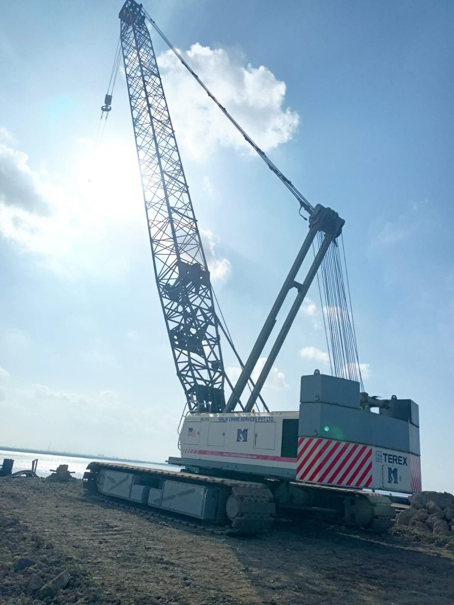
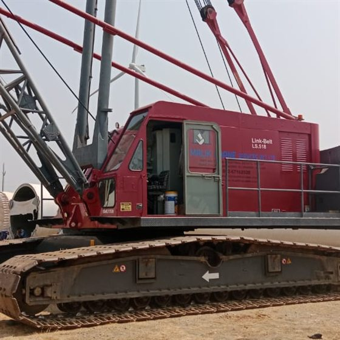
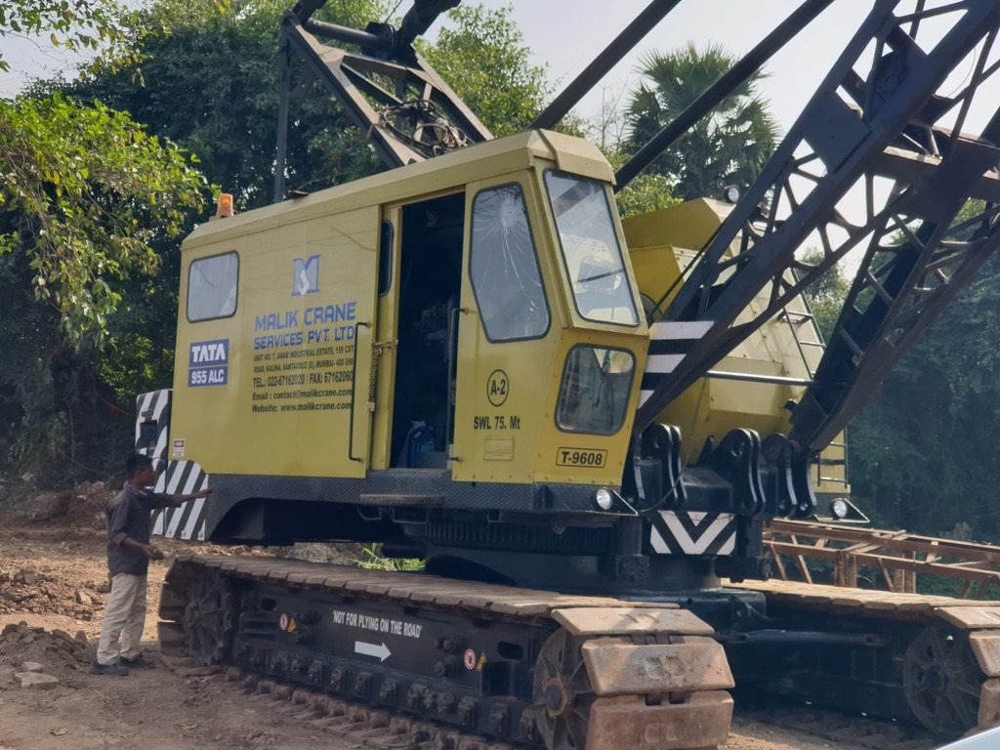
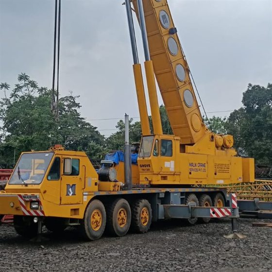
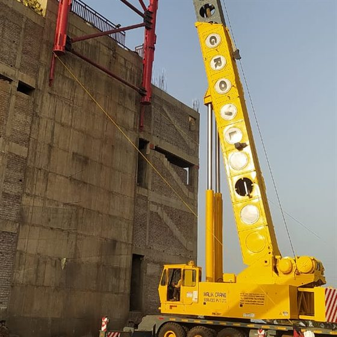
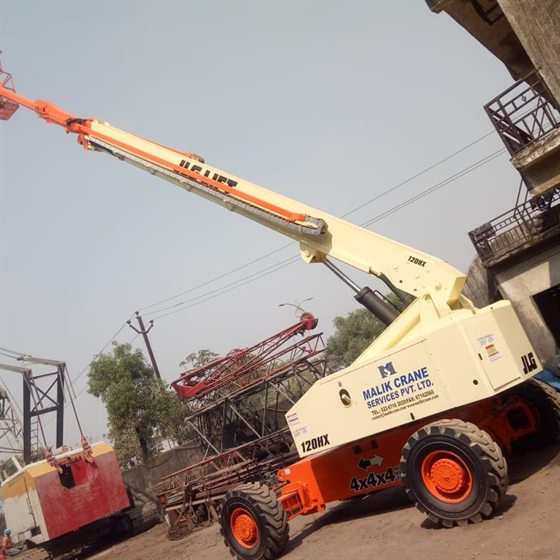
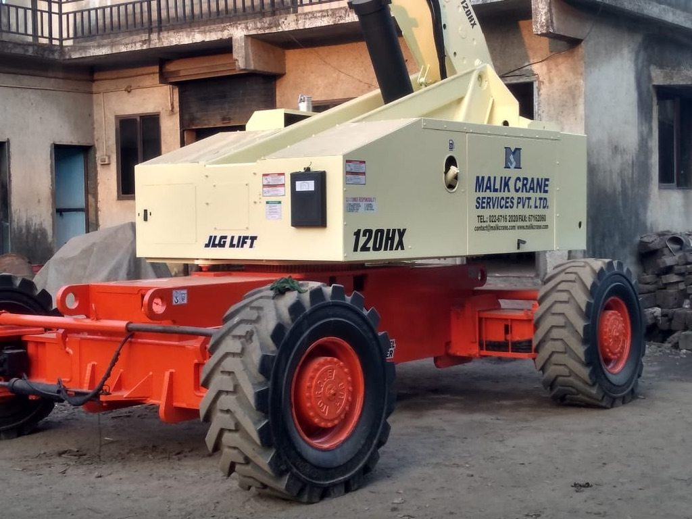

Our Products
Crawler Cranes
Our fleet covers both hydraulic operated crawler cranes and heavy duty mechanical crawler cranes for multi-purpose project needs.



Hydraulic Telescopic Boom Truck Cranes
High-mobility telescopic boom solution designed for quick setup and versatile lifting capacities across various urban job sites.


Boom Lifts
Also called manlifts or aerial work platforms, these provide safe and efficient height access for maintenance and construction tasks.

